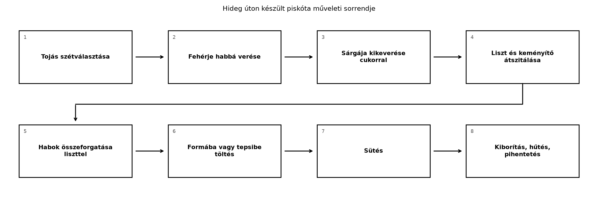

A hideg úton készült felvert tészták a cukrászati alaprepertoár gerincét adják: tortalapok, tekercsek, babapiskóták és a nehezebb, zsiradékos vagy olajos magvas lapok is ebből a családból indulnak. Az alábbi alfejezet a gyakorlatban leggyakrabban használt hideg eljárásokat járja körül, a tojásszétválasztásos és egészben vert változatoktól a sütés utáni kezelésig.
Egy cukrászüzemben a reggeli műszak sokszor azzal indul, hogy a tortákhoz piskótalapokat kell sütni. A vendég a torta szeletelésekor a magas, egyenletes, rugalmas belső szerkezetet várja el; ha a piskóta tömör, morzsálódik, vagy középen beesik, a kész torta nem adható ki. A hideg úton készült felvert tészták technológiája azért alaptudás, mert gyors, nem igényel külön melegítést a habképzéshez, és a jól elsajátított alapműveletekkel stabil, kiszámítható lapok süthetők. A hibák többsége nem a recepten, hanem a habképzés, a liszt hozzákeverése vagy a sütés hőmérsékletének elvétésén múlik.
A hideg úton készült könnyű felvert tészták műveleti sorrendje egy irányba halad, és minden lépés az előző állapotot védi: a felvert habot nem szabad törni, ezért a lisztet óvatosan forgatjuk, és a masszát azonnal sütjük.

Az ábra lényege: a habot előbb készítjük el, utána keverjük hozzá a száraz anyagot, majd azonnal sütjük. Ha bármelyik lépésnél sokat várakozunk, a légbuborékok összeolvadnak, és a tészta összeesik.
Definíció. Hideg úton készült felvert tészta. Olyan felvert tészta, amelyben a tojásból vagy tojásfehérjéből mechanikai habveréssel, melegítés nélkül alakítjuk ki a lazító levegőbuborékokat. A habot hidegen, legfeljebb szobahőmérsékletű alapanyagokból verjük.
Definíció. Könnyű felvert tészta. Alacsony zsiradék- és liszttartalmú, elsősorban tojáshabbal lazított tészta. A szerkezetet a tojásfehérje-hab stabilizálja; a sütés során a fehérje alvad, a keményítő csirízesedik. Ide tartozik a tortapiskóta, a piskótatekercs-lap (roládlap), a babapiskóta és ezek kakaós változatai.
Definíció. Nehéz felvert tészta. Olyan felvert tészta, amely zsiradékot (vajat, olajat) vagy olajos magvat (mandulát, mogyorót, diót) is tartalmaz. A zsiradék lágyabbá, szaftosabbá teszi a lapot, de a felvert hab továbbra is meghatározó lazító tényező. Hideg úton készült nehéz felvert például a vajas piskóta és a mandulás piskóta.
A hideg úton készült könnyű felvertnek két alapváltozata van:
Szabály. A hideg hab stabilitása. A tojásfehérje habverésekor a fehérjemolekulák kicsapódnak a levegő-víz határfelületen, és rugalmas hártyát képeznek a buborékok körül. A cukor késlelteti a túlverést és stabilizálja a habot, mert megköti a vizet, és növeli a folyadék viszkozitását. A zsiradék (tojássárgája-maradék, vaj, olajos edény) gátolja a habképződést, ezért a fehérjét zsírmentes, száraz edényben kell verni.
Recept. Alapmennyiség: 1 db 24 cm átmérőjű tortalap, amelyből két rétegre vágható.
| Nyersanyag | Mennyiség (g) | Megjegyzés |
|---|---|---|
| Tojásfehérje | 180 | kb. 6 db közepes tojás fehérjéje (ellenőrizendő: tömegosztály) |
| Tojássárgája | 120 | kb. 6 db tojás sárgája |
| Kristálycukor | 150 | 120 g a fehérjehabhoz, 30 g a sárgájához |
| Finomliszt | 120 | átszitálva |
| Étkezési keményítő | 30 | átszitálva, a liszt egy részét helyettesíti a puhább morzsa miatt |
| Só | 1 | csipetnyi, a hab stabilizálásához |
| Összesen | 601 | nyers tészta |
Eljárás (számozott lépések):
A forma bélelését, a sült lap leválasztását és kiborítását az alábbi képsor mutatja (1., 6. és 8. lépés).
Miért? A fehérjéből vert hab adja a lazító levegőt. A keményítő egy része csökkenti a sikér mennyiségét, így a morzsa puhább, kevésbé rugalmas. A sütés során a fehérje alvad, a keményítő csirízesedik, és a vízgőz tovább emeli a tésztát.
A roládlap lényegesen vékonyabb, rugalmasabb, ezért receptje kevesebb lisztet és keményítőt tartalmaz, és a tésztát gáztepsibe simítjuk. Alapmennyiség: 1 db szabványos gáztepsi (kb. 30 × 40 cm).
| Nyersanyag | Mennyiség (g) | Megjegyzés |
|---|---|---|
| Tojásfehérje | 150 | kb. 5 db |
| Tojássárgája | 90 | kb. 5 db |
| Kristálycukor | 120 | 90 g a fehérjéhez, 30 g a sárgájához |
| Finomliszt | 80 | átszitálva |
| Étkezési keményítő | 20 | átszitálva |
| Só | 1 | |
| Összesen | 461 | nyers tészta |
Az eljárás megegyezik a tortapiskótával, de a masszát sütőpapírral bélelt gáztepsibe simítjuk kb. 0,8–1 cm vastagon, és 180–200 °C-on, rövidebb ideig, 8–12 percig sütjük (ellenőrizendő: sütőtípus szerint). Kritikus pont a sütés utáni azonnali feltekerés: a lapot a sütőből kivéve azonnal, amíg forró és rugalmas, egy tiszta konyharuhára vagy sütőpapírra borítjuk, a papírt lehúzzuk, és a hosszabbik oldalánál fogva szorosan feltekerjük. Így hűl ki; kihűlés után óvatosan kitekerjük, megtöltjük, és újra feltekerjük. Ha a lap kihűl, mielőtt feltekernénk, megreped. A roládlap sütési vesztesége magasabb, mert vékonyabb, ezért a tészta nagyobb felületen párolog.
A babapiskóta sűrűbb, formázott habcsókjellegű piskóta, amelyet habzsákból nyomunk ki. Magasabb tojásfehérje- és alacsonyabb sárgája-arány jellemzi. Alapmennyiség: kb. 40–50 db.
| Nyersanyag | Mennyiség (g) | Megjegyzés |
|---|---|---|
| Tojásfehérje | 200 | kb. 6–7 db |
| Tojássárgája | 80 | kb. 4 db |
| Kristálycukor | 140 | 120 g a fehérjéhez, 20 g a sárgájához |
| Finomliszt | 140 | átszitálva |
| Porcukor | 30 | a kinyomott piskóta beszórásához |
| Összesen | 560 | porcukor nélkül (a beszóró porcukorral 590 g) |
Eljárás:
A babapiskóta nyomását (5–6. lépés) az alábbi képsor mutatja: a sima csöves zsákot kb. 45°-ban tartjuk, egyenletes nyomással 5–7 cm-es pálcikákat húzunk, a végén a nyomást megszüntetjük, és a csövet visszahúzzuk.
A kakaós piskóta a tortapiskóta vagy roládlap változata, ahol a liszt egy részét holland kakaóporral helyettesítjük. A kakaópor zsírtartalma és sötét színe miatt a habot óvatosabban kell kezelni, és a sütés hőmérsékletét 5–10 °C-kal csökkenteni ajánlott, hogy a kakaó ne égjen meg.
Arány: 100 g liszt helyett 70 g liszt + 30 g kakaópor adható, de a kakaó minőségétől függően ez változhat. A kakaót a liszttel együtt átszitáljuk. A kakaós piskóta sütésekor a tészta hamarabb barnul, ezért a sütési időt tűpróbával ellenőrizzük.
Vajas (zsiradékos) piskóta. A zsiradékot olvasztott, de nem forró vajként adjuk a masszához. A vajat a sárgájás keverékbe dolgozzuk, mielőtt a habbal összeforgatjuk, így a hab nem törik. A vaj lágyabb szerkezetet, gazdagabb ízt ad; a tészta sűrűbb, ezért a sütési hőmérséklet kissé alacsonyabb (170–180 °C), az idő hosszabb lehet.
Alaprecept 24 cm-es tortához:
| Nyersanyag | Mennyiség (g) | Megjegyzés |
|---|---|---|
| Tojásfehérje | 150 | kb. 5 db |
| Tojássárgája | 90 | kb. 5 db |
| Kristálycukor | 120 | 90 g a fehérjéhez |
| Finomliszt | 100 | |
| Étkezési keményítő | 20 | |
| Vaj | 60 | olvasztva, szobahőmérsékletre hűtve |
| Összesen | 540 | nyers tészta |
Az eljárás: a fehérjét a cukorral kemény habbá verjük. A sárgáját a maradék cukorral habosra keverjük, majd az olvasztott vajat vékony sugárban, folyamatos keverés mellett hozzáadjuk (emulzió képződik). Ezután a sárgájás-vajas keveréket a habba forgatjuk, majd a lisztet-keményítőt. Azonnal formába töltjük és sütjük.
Olajos magvas nehéz felvert. A liszt egy részét vagy egészét őrölt olajos mag (mandula, mogyoró, dió) helyettesíti. Az olajos mag zsírtartalma miatt a tészta szaftosabb, de a habot könnyebben összehúzza. Az őrölt magvat a liszttel együtt vagy a sárgájás részhez adva dolgozzuk be. Példa: mandulás piskóta – a fenti vajas receptből a vajat elhagyva, a liszt 120 g-jából 60 g őrölt mandula + 60 g liszt. A sütés hőfokát ekkor is 170–180 °C-ra állítjuk.
Szabály. A zsiradék és a hab sorrendje. Hideg úton készült nehéz felvertnél a zsiradékot mindig a sárgájához vagy a lisztes részhez keverjük, és soha ne közvetlenül a fehérjehabhoz, mert a zsiradék a habot azonnal összeeseti. Az olvasztott vaj hőmérséklete ne haladja meg a 40–45 °C-ot, különben a tojássárgája kicsapódik, a hab pedig összeesik.
A sütési hőmérséklet és idő tájékoztató jellegű, mert függ a sütő típusától, a tészta vastagságától és a forma anyagától. Általános irányértékek:
| Termék | Hőmérséklet (°C) | Idő (perc) | Forma/méret |
|---|---|---|---|
| Tortapiskóta (24 cm) | 170–180 | 25–30 | kapcsos vagy bélelt forma |
| Roládlap (gáztepsi) | 180–200 | 8–12 | sütőpapírral bélelt tepsi |
| Babapiskóta | 170–180 | 12–15 | habzsákból nyomva |
| Kakaós piskóta | 165–175 | 25–35 | forma, alacsonyabb hő |
| Vajas/olajos magvas piskóta | 170–180 | 30–40 | forma |
Szabály. Sütés utáni műveletek. A tortapiskótát a formában 5–10 percig hagyjuk, majd rácsra borítjuk. A hűtés során a gőz távozik, a szerkezet megszilárdul. A piskótát legalább 1–2 órán át pihentetjük, mielőtt vágnánk vagy töltenénk; a frissen sült piskóta vágáskor törik, morzsálódik. A roládlapot forrón feltekerjük, a babapiskótát azonnal levesszük a papírról, és rácson hűtjük, mert a papíron tartva megpuhul. A nehéz felvert lapok hűtése lassabb, ezért kiborítás előtt tovább pihenhetnek a formában.
Egy tortapiskóta nyers tömege 601 g. A sütés után a kiborított, még meleg lap tömege 525 g. Számítsuk ki a sütési veszteséget tömegszázalékban.
Adott:
,
.
Keresett:
(%).
Képlet:
.
Behelyettesítés:
Ellenőrzés: a veszteség a piskótánál 10–15% körüli, tehát az érték reális. ∎
A 24 cm-es tortapiskóta receptjét 28 cm átmérőjű formára kell átszámítani. A forma térfogata a sugár négyzetével arányos, ezért a szorzószám:
Minden hozzávalót ezzel a szorzóval növelünk. Az alaprecept 180 g fehérjéje és 120 g sárgája helyett:
A cukor: . A liszt: . A keményítő: .
Ellenőrzés: az összes nyers tömeg , ami a nagyobb formához arányos. ∎
A tojás darabszámra való átváltásnál figyelembe kell venni, hogy a közepes tojás fehérjéje kb. 30 g (ellenőrizendő). Így a 245 g fehérje kb. 8 tojásfehérjének felel meg.
A formaméret hatását az alábbi ábra szemlélteti: a 28 cm-es forma területe kb. 616 cm², a 24 cm-esé kb. 452 cm², így a szorzószám kb. 1,36. A HTML-kiadás kalkulátorában a régi és az új forma (kör vagy téglalap) méretét megadva a recept minden tétele, az összes tömeg és a tojás becsült darabszáma azonnal átszámolódik.
Jogszabály. Élelmiszer-higiénia. A felvert tészták készítése során a nyers tojás és a tojást tartalmazó massza hűtést igénylő, hőkezelésre váró nyersanyagnak számít. A 852/2004/EK rendelet szerinti általános higiéniai követelményeket be kell tartani: a tojást felhasználásig hűtve vagy hűvös helyen tároljuk, a kész masszát azonnal sütjük, a sütőből kikerült terméket pedig a továbbiakban megfelelően hűtjük (ellenőrizendő: a rendelet pontos előírásai és a nemzeti útmutató). A tojás allergén, ezért a készterméken jelölni kell.
Jogszabály. Fogyasztói tájékoztatás. Az 1169/2011/EU rendelet alapján a piskótában glutént és tojást kell allergénként feltüntetni. A kakaós, vajas vagy olajos magvas változatoknál a tej (vaj), illetve a diófélék is megjelenhetnek. A keresztszennyeződés kockázatát minden üzemben külön kell kezelni (ellenőrizendő: az allergénkezelésre vonatkozó NÉBIH-útmutató).
A tanuló készítsen el hideg úton, tojásszétválasztással egy 24 cm-es tortapiskótát, majd értékelje a szerkezetét és sütési veszteségét.
Munkaruha, hajháló, ékszer levétele. Kézmosás. A munkafelületet és eszközöket fertőtlenítős szerrel áttöröljük. A tojásokat közvetlenül felhasználás előtt ellenőrizzük (héj ép, nincs repedés). A tojást törés után külön edénybe ütjük, hogy ne kerüljön héj vagy romlott darab a masszába.
Biztonsági korlát. A robotgépet csak oktatás után, felügyelet mellett használd; tisztítás előtt állítsd le és áramtalanítsd. A sütőből a forró formát edényfogóval vedd ki.
Technológiai lap.
Ellenőrzési pontok: a hab fényes, csúcsot tart; a massza nem folyós, hanem levegős; a sütőből kivett piskóta visszapattan; a tű száraz.
Takarítás: a robotgépet és az eszközöket a használat után azonnal mosd el, a munkafelületet fertőtlenítsd.
Dokumentálás: a gyakorlat során rögzítsék a sütési időt, hőmérsékletet, a nyers és sült tömeget, valamint az észlelt hibákat.
A kész hideg úton készült piskóta akkor megfelelő, ha:
Az érzékszervi ellenőrzést a sütés után 1–2 órával, szobahőmérsékleten végezzük. A legfontosabb a vágási próba: a késsel vágott felület ne tömörödjön, és ne legyen ragacsos a közepén.
Hiba 1: A piskóta középen beesik.
Tünet: a sütőből kivett lap magas, majd kihűlés közben összeesik, a
közepe bemélyed.
Ok: a tészta alulvert vagy túlvert hab; a lisztet túl sokáig kevertük; a
sütő hőmérséklete túl alacsony volt, így a szerkezet nem rögzült; a sütő
ajtaját korán kinyitottuk.
Megelőzés/javítás: kemény habot verünk, a lisztet csak óvatosan
forgatjuk, 175 °C körül sütünk, az ajtót nem nyitjuk. A beesett piskóta
torta aljának nem alkalmas, de kockázva felhasználható
trüffelkrém-alapnak vagy kóstolásra.
Hiba 2: A roládlap repedezik feltekeréskor.
Tünet: a lap kihűlés után megreped, nem tekerhető fel.
Ok: későn tekertük fel; túl sok liszt; túl hosszú sütés, száraz
lap.
Megelőzés/javítás: a lapot a sütőből kivéve azonnal, még forrón
feltekerjük; a liszt mennyiségét ne növeljük; a sütési időt rövidítsük.
Ha már kihűlt, enyhén megnedvesíthetjük cukorsziruppal, és konyharuhában
melegítve próbálhatjuk meg hajlítani, de az eredmény bizonytalan.
Hiba 3: A tészta tömör, alacsony.
Tünet: a piskóta sűrű, kevésbé levegős.
Ok: a fehérjét nem vertük elég keményre, vagy a habot a sárgájás keverék
hozzáadásakor megtörtük; túl sok zsiradék került a fehérjéhez; a lisztet
erőteljesen kevertük.
Megelőzés/javítás: zsírmentes eszközök, megfelelő habverés, óvatos
forgatás.
Hiba 4: A piskóta alja ragacsos, „nyers”
réteg.
Tünet: vágáskor alsó, sötétebb, tömör csík.
Ok: túl vastag tészta, túl alacsony sütési hőmérséklet, vagy a forma
rossz hővezetése.
Megelőzés: vékonyabb réteg, megfelelő hőmérséklet, hosszabb sütés
tűpróbáig.
Egy cukrászda hétvégi esküvői tortához 28 cm-es piskótalapokat sütött. A szakács a megszokott 24 cm-es receptet használta, de a nagyobb formába ugyanannyi tésztát öntött, ezért a lap alacsony lett. A torta szeletelésekor a piskóta tömörnek tűnt, és a vendég reklamált. Az üzemvezető utólag kiszámította a szorzószámot: a 28 cm-es formához 1,36-szoros (36%-kal több) tészta kellett volna. A hibás lapot selejtezték, a pótlást már a helyes átszámítással sütötték. A tanulság: minden formaméret-változásnál a sugár négyzetével kell átszámolni, nemcsak a hozzávalók tömegét, hanem a sütési időt is módosítani kell.
1. feladat (A)
Sorold fel a hideg úton készült könnyű felvert tészták két
alapváltozatát, és írd le, mi a fő különbség a műveletben.
2. feladat (A)
Számolj százalékos sütési veszteséget: a nyers tömeg 461 g, a sült
roládlap tömege 400 g.
3. feladat (B)
A 24 cm-es tortapiskóta receptje: 180 g fehérje, 120 g sárgája, 150 g
cukor, 120 g liszt, 30 g keményítő. Átszámítva 26 cm-es formára, mennyi
lesz a fehérje és a liszt tömege? (A szorzószámot számold ki.)
4. feladat (B)
Milyen sorrendben kell a következő lépéseket végrehajtani egy nehéz
felvert vajas piskótánál? Rakd helyes sorrendbe: (a) vaj hozzákeverése a
sárgájához; (b) fehérje habbá verése; (c) liszt beleforgatása; (d)
sárgájás-vajas keverék a habba forgatása; (e) sütés.
5. feladat (C)
Egy kakaós piskóta teteje megégett, a közepe viszont nyers maradt.
Elemezd a hibát: mi lehet az ok, és hogyan javítanád a következő
sütésnél?
6. feladat (D)
Készítsd el a gyakorlati útmutató alapján a 24 cm-es tortapiskótát.
Tölts ki egy egyszerű technológiai lapot, rögzítsd a sütési időt,
hőmérsékletet, a nyers és sült tömeget, majd értékeld a kész lapot a
minőségi szempontok szerint.
Önellenőrzés – válaszok
1. feladat (A) megoldása
Két alapváltozat: tojásszétválasztásos (külön vert) és egészben vert. A
tojásszétválasztásosnál a fehérjét és a sárgáját külön munkáljuk meg,
majd forgatjuk össze; az egészben vertnél a tojást egészben, cukorral
verjük habbá.
2. feladat (A) megoldása
.
∎
3. feladat (B) megoldása
Szorzó:
.
Fehérje:
.
Liszt:
.
∎
4. feladat (B) megoldása
Helyes sorrend: b (fehérje habbá verése) → a (vaj a sárgájához) → d
(sárgájás-vajas keverék a habba) → c (liszt beleforgatása) → e
(sütés).
5. feladat (C) megoldása
Ok: túl magas sütőhőmérséklet a kakaó miatt; a teteje hamar megbarnul,
mielőtt a közepe átsülne. Javítás: 165–175 °C-ra csökkenteni a hőfokot,
esetleg alufóliával takarni, hosszabb ideig sütni, tűpróbával
ellenőrizni.
6. feladat (D) megoldása
A gyakorlati feladatnál az értékelési szempontok: a technológiai lap
helyes kitöltése, a higiéniai előírások betartása, a hab állaga, az
összeforgatás óvatossága, a sütési eredmény (magasság, szín, tűpróba), a
veszteség kiszámítása, és a kész lap érzékszervi értékelése. Várt
eredmény: a piskóta magas, aranysárga, rugalmas, vágásfelülete
egyenletes, a sütési veszteség 10–15 %.
A hideg úton készült felvert tésztákban a lazítást a mechanikai úton, melegítés nélkül vert tojáshab adja. A könnyű felvert (tortapiskóta, roládlap, babapiskóta, kakaós piskóta) alacsony zsiradék- és liszttartalmú; a nehéz felvert zsiradékot vagy olajos magvat tartalmaz. A tojásszétválasztásos módszer stabilabb: a fehérjét kemény habbá verjük, a sárgáját külön kikeverjük, majd a liszttel óvatosan összeforgatjuk. Az egészben vert hideg változat kevésbé stabil. Sütéskor kulcsfontosságú a 170–190 °C közötti hőmérséklet, az ajtónyitás kerülése és a tűpróba. A sütési veszteség 10–15 %. A piskótát kiborítás után pihentetni kell; a roládlapot forrón feltekerjük. A piskótalapokat a későbbi fejezetekben tortákhoz, tekercsekhez, minyonokhoz és desszertekhez használjuk fel: Meleg úton készült könnyű és nehéz felvertek, hibák, Édes teasütemények, Tekercsek. A higiéniai és allergénszabályok (tojás, glutén) minden felvert tésztánál kötelezők.
A fejezet a klasszikus cukrászati hab- és piskótatechnológiára épül. A megadott sütési hőmérsékletek, idők, tojástömegek és veszteségarányok tájékoztató jellegűek, és a sütő típusa, a receptúra és a forma anyaga szerint eltérhetnek. Ellenőrizendő: a közepes tojás tömegosztály szerinti fehérje/sárgája tömege, a Magyar Élelmiszerkönyv cukrászati termékekre vonatkozó előírásai a piskóta megnevezésére és összetételére, a 852/2004/EK rendelet nyers tojásos massza hőkezelési és tárolási követelményei, a 1169/2011/EU rendelet allergénjelölési előírásai, valamint a NÉBIH útmutatók a cukrászati üzemekre. A hagyományos piskóta arányok a szakmában elterjedt gyakorlatot tükrözik, nem eredeti, jogszabályi receptek.